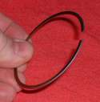
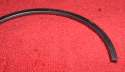
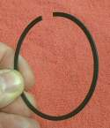
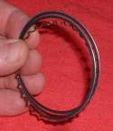
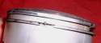
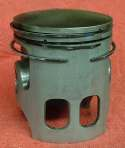

Rings have a mark on the side of the ring that goes up. This mark can be either a printed (Like with ink) mark or a mark stamped into the ring. Unfortunately, a lot of Chinese rings... well... don't! People keep asking me "If there is no mark, which way do the rings go?" I never really gave it much thought till I started working on some Chinese engines. Now, all of a sudden, this is an issue. After looking at a lot of ring sets and studying a lot of shop manuals, here is my best guess.


On four stroke engines the top ring is often chrome plated on the sliding surface. If it has a taper on the back side of the ring that taper should go up and it should be the second ring. If the front side of the ring is tapered, the taper should be up. I realize that some ring designs have a stepped or taper side that is meant to be installed down but I have not come across any being used in a motorcycle engine. Just because I have not run across them does not mean that they are not out there.

If the ring is not chromed it probably would be the second ring and again the tapered edge in the back of the ring should go up. Same on the front side. If there is a taper it should go up. These black rings have a parkerized coating that increases their resistance to wear. Sometimes the parkerized ring is used as the first or top ring too.
The three piece oil rings have no up or down side.



Some two strokes have a bevel at the ends of the ring, or the beginning, depending on your point of view. That bevel fits the peg in the piston. This bevel goes up. If there are two rings and one is chrome plated, the plated one goes in the top ring groove. If both rings are plated and one has a taper the tapered one is the second ring. Sometimes the second ring will have a ring expander behind it. Also check the thickness of the ring because sometimes the top and second ring can be of different thicknesses. I have not seen any Keystone or Dykes type rings from China but you never know what the future will bring! Make sure the ring compresses completely and smoothly into the ring groove. If it does not, it is not the right ring for the groove. As far as I know Keystone and Dykes rings are ONLY used on two stroke engines. At least, I have never seen them used on four stroke engines.
To identify a Keystone ring place one side of the ring in the jaws of a vernier caliper and clamp down on it firmly. Now move the opposite side of the ring up and down. If it is a flat ring it will not rock. It will only flex. If it IS a Keystone type ring it wll rock until the Keystone edge hits the jaw of the caliper.
I have noticed that most Chinese engines, at this time (2010), don't have oversize pistons available. If an engine has run enough to require new rings and/or piston, the cylinder is almost always worn out too and requires either boring to the next oversize or replacement.
If it sounds like the Chinese need to MARK THEIR RINGS AND HAVE OVERSIZES, You would be right.